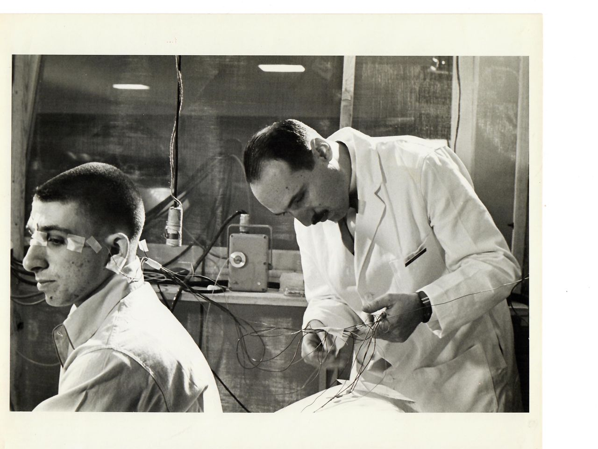

Find Your Natural Bedtime: A 7-Day Experiment

"I'm just not a morning person." That's what I said for thirty years. Then I did this experiment and realized I'd been lying to myself.
I wasn't a night owl. I was just a person who had never let her body choose its own bedtime. I had been forcing myself into a schedule that didn't fit — staying up late because I thought that's what "productive people" did, waking up early because that's what "responsible adults" did, and feeling tired all the time because those two things didn't match.
The experiment is simple. Seven days. No alarms. No forcing yourself to sleep. You just… go to bed when you're tired and wake up when your body wants to. That's it. But you have to actually follow the rules, which is harder than it sounds.
I first tried this in 2016, before Leo was born. I was working from home for a week and decided to let my body run free. No schedule. No meetings. Just sleep when tired, wake when done. The first two days were a disaster. I stayed up until 2 AM because I was watching a show, then slept until 10 AM. I felt groggy and disoriented. That's not your natural rhythm — that's just bad decisions. So I had to refine the experiment.
Here's the real protocol. For seven days, you do this: when you feel sleepy — actually sleepy, not bored, not procrastinating — you go to bed. No phone in bed. No TV. Just bed. Then you sleep. No alarm. You wake up when your body wakes up. You write down your bedtime and wake-up time. That's it.
The first few days might be weird. Your body might be confused because you've been overriding it for years. That's fine. Don't judge. Just collect data.
By day four or five, a pattern should emerge. You'll notice that you naturally get sleepy around the same time each night, and naturally wake up around the same time each morning. That's your chronotype. That's your real bedtime.
I did this experiment and discovered that my natural bedtime is 10:45 PM. Not 10:00. Not 11:30. 10:45. And my natural wake-up is 6:30 AM. That's seven hours and forty-five minutes. For years I had been forcing myself to stay up until 11:30 or 12:00 because I thought I was a night owl. I wasn't. I was just a person with a 10:45 bedtime who had never bothered to find out.
If you want to skip the seven-day experiment and get an estimate faster, use the bedtime finder.
But the seven-day experiment is better. Because it's not about an algorithm's guess. It's about your actual body.
A woman named Priya — not the same Priya from before, a different one — swore she was a morning person. She went to bed at 9 PM and woke up at 5 AM. She did this for years. She was always tired. She thought she had a medical problem. I had her do the seven-day experiment. Turns out her natural bedtime was 11:30 PM and her natural wake-up was 7:30 AM. She was forcing herself to sleep two and a half hours earlier than her body wanted. No wonder she was exhausted. She shifted her schedule later by two hours. Within a week, she felt better than she had in a decade.
Another client, a guy named Carlos, thought he was a night owl. He went to bed at 1 AM and woke up at 9 AM. He worked from home so his schedule was flexible. But he still felt tired. The experiment showed his natural bedtime was 10:15 PM. He was forcing himself to stay up almost three hours later because he thought "night owls are cooler." He shifted earlier and his mood improved dramatically. He said "I didn't know I could be a morning person. I just never tried."
So here's how to run the experiment properly.
Pick a week when you don't have early morning obligations. A vacation week is ideal, but a weekend is fine if you can do it for seven days straight. If you can't do seven days, do five. That's still enough to see a pattern.
Each night, pay attention to your body. Not the clock. Not your to-do list. Your body. When do you start yawning? When do your eyes feel heavy? When does your brain get foggy? That's your sleep onset signal. Go to bed within thirty minutes of that signal. Don't push through it. That's the mistake most people make. They feel sleepy at 10 PM, but they say "I'll just finish this one thing" and then they're wide awake again at 11. The sleepiness window is narrow — maybe twenty to thirty minutes. If you miss it, you have to wait for the next one, which might be ninety minutes later.
When you go to bed, do not look at your phone. Do not watch TV. Do not read a thriller. Just lie there in the dark. If you don't fall asleep within twenty minutes, get up. Go read a boring book in a different room. Then try again when you feel sleepy. The worst thing you can do is lie in bed getting frustrated.
In the morning, do not set an alarm. Let your body wake up naturally. You might wake up at 5 AM one day and 8 AM the next. That's fine. Your body is figuring itself out. Write down the time. Also write down how you feel on a scale of one to ten.
After seven days, look at your log. Ignore the first two days — those might be weird because you're adjusting. Look at days three through seven. You'll probably see that your bedtime clusters around a specific hour. That's your natural bedtime. You'll also see that your wake-up time clusters around a specific hour. That's your natural wake-up.
Now you have a target. You don't have to follow it perfectly every night. But when you deviate, you'll know what you're deviating from.
I did this experiment every year for three years. My numbers drifted slightly — from 10:45 PM to 10:30 PM after Leo was born because I was more tired, then back to 10:45 as he got older. That's normal. Your chronotype can change with age, stress, and season.
One thing that helped me during the experiment was using the sleep cycle calculator to sanity-check my observations.
If I noticed I was naturally waking up at 6:30 AM, I'd plug that into the calculator. It would tell me my ideal bedtimes were 9:00 PM, 10:30 PM, 12:00 AM, or 1:30 AM. My natural bedtime was 10:45 PM, which is close to 10:30. That confirmed that my body was following cycle logic, not random chance.
If your natural bedtime doesn't match any of the calculator's recommendations, you might have a non-standard cycle length. That's okay. You can adjust the calculator's settings to match your observed pattern.
Now, what if you do the experiment and you don't see a clear pattern? Some people have irregular circadian rhythms. Shift workers. People with certain medical conditions. New parents — that's not a medical condition, but it might as well be. If your data is all over the place, don't worry. You can still find a bedtime window. It might just be wider. Instead of a forty-five-minute window, you might have a two-hour window. That's fine. Aim for the middle.
A guy named Sam was a flight attendant. His schedule was chaos. He did the seven-day experiment during a vacation and still got inconsistent results because his body was so confused. We used the bedtime finder instead — which works with inconsistent data — and found that his best sleep happened when he went to bed between 1 AM and 3 AM, no matter what. That became his target window. Even if he landed at midnight, he'd stay up until 1 AM. That was better than trying to sleep at his body's non-preferred time.
After you find your natural bedtime, take the sleep quality quiz to get a baseline. Then adjust your schedule to match your natural rhythm. Retake the quiz after two weeks. I've seen scores jump by fifteen to twenty points just from alignment.
Here's the thing about the seven-day experiment. It's not about becoming a different person. It's about finding out who you actually are. If you're a night owl, great. Build your life around that as much as you can. If you're a morning person, also great. Stop staying up late to prove something.
Most of us are neither extreme. Most of us are in the middle. We just need permission to go to bed when we're tired and wake up when we're done. The experiment gives you that permission.
P.S. I tried the experiment again last month, just to see if my bedtime had changed. It's still 10:45 PM. My husband's is 11:30 PM. We've accepted that we have different schedules. He stays up later, I wake up earlier. It works. Marriage is about compromise, not synchronized sleep cycles.